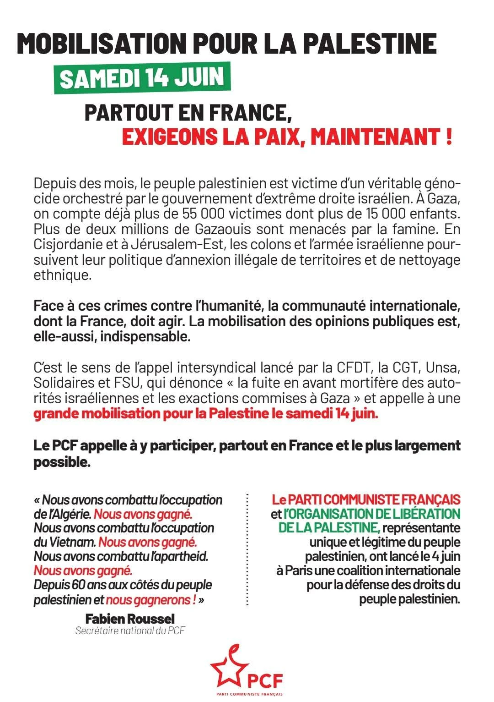
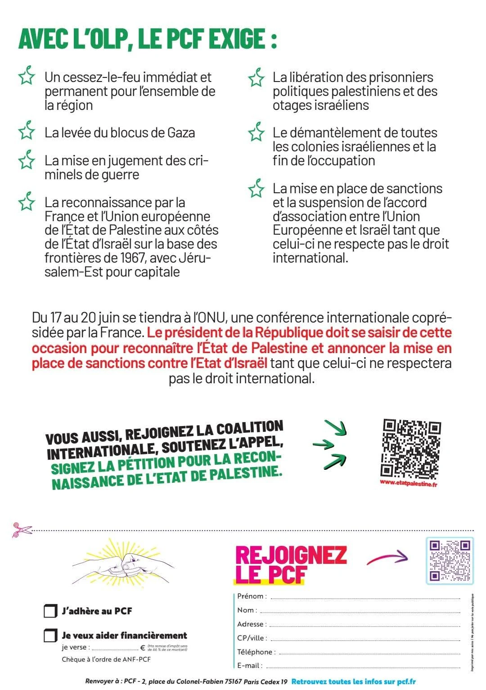

Tract
14 juin 2025. « Mobilisation pour la Palestine »
Date indiquée par Facebook · 14 juin 2025
Repères éditoriaux
Nous avons relayé le tract du PCF appelant à la mobilisation du samedi 14 juin 2025. Le document exige notamment un cessez-le-feu, la levée du blocus de Gaza et la reconnaissance de l’État de Palestine.


Sources
Archive rouge · document diffusé sur Facebook · AR-0002-FB-01093
À lire aussi · Journée internationale de la paix. Le texte national dans le relevé